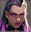
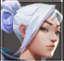
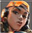
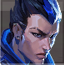

Det at en karakter tilhører klassen «duelist» betyr at karakteren er tilpasset til dueller. Noen eksempler på egenskapene deres er «flash grenades», «molotovcocktail» og «frag granades». Det er 5 karakterer som har denne klassen og deres navn er Reyna, Jett, Raze, Phoenix og Yoru. Nå skal vi se litt nærmere på deres egekskaper.
Egenskapene som aktiveres med «Q» og «E» er sammenhengende. De er tilgjengelige hvis Reyna drepte en motstander eller hjalp en lagkamerat med å drepe. Når hun dreper en motstander, kommer det opp en sfære fra motstanderens kropp som Reyna kan manipulere med. Egenskapen som aktiveres med «Q» lager en stråle mellom Reyna og motstanderen som hun drepte eller hjalp med å drepe, og strålen kan ikke gå gjennom vegger. Strålen gir Reyna 100 liv, og kan til og med gjenopprette skjoldet, som ingen andre agenter kan gjøre. Hvis Reyna gjenopprettet skjoldet også, går det vekk om 25 sekunder. Egenskapen som aktiveres med «E» lar Reyna gå inn i en modus hvor verken hun eller en motstander kan skyte på hverandre. Denne modusen er nyttig for å drepe en motstander, og gå vekk fra stedet hvor du drepte motstanderen, slik at du også ikke blir drept. En «Q» eller «E» egenskap koster 200 og du kan maksimalt ha 2 «Q» eller «E» egenskaper.
Egenskapen som aktiveres med «C» er et øye som gjør alle som ser på øyet blinde. Hvis du slutter å se på øyet ser du som vanlig. En annen effekt til øyet er at øyet demper lyden, så hvis du ser på øyet så hører du ekstremt lite. Egenskapen koster 250 og du kan maksimalt kjøpe 2 «C» egenskaper.
Den ultimative egenskapen hennes henger godt sammen med de to siste som jeg omtalte. Hvis hun aktiverer den ultimative egenskapen og så dreper noen, så gjenoppretter hun liv automatisk (du trenger ikke å trykke på «Q») og det dannes ikke en stråle, så du kan gjenopprette liv gjennom vegger. Hvis du trykker på «E» etter å ha drept noen, så går du ikke bare i en modus hvor du ikke kan skyte andre mens andre ikke kan skyte deg, men du blir også usynlig. Den ultimative egenskapen krever 6 poeng.
Egenskapen som aktiveres med «Q» gjør et stort hopp. Denne egenskapen kan være nyttig for å gå over sperringer, for å komme seg til et sted raskere eller for å komme på uvanlige posisjoner. Egenskapen koster 150 og du kan maksimalt kjøpe 2 «Q» egenskaper.
Egenskapen som aktiveres med «E» dytter Jett fort til retningen som hun går til. Denne egenskapen kan være nyttig til å gå vekk fra et sted hvor det er en stor sannsynlighet for å dø. Samtidig er Jett den beste agenten hvis du vil være en sniper, fordi hvis hun har skutt med en Operator så må hun vente til den kan skyte igjen, og mens hun venter på det kan hun gå vekk fra stedet hvor hun ble sett. Denne egenskapen kan brukes på nytt i samme runde hvis du dreper to personer. Du kan maksimalt ha bare en «E» egenskap.
Egenskapen som aktiveres med «C» kaster en tåke som går vekk om 5 sekunder. Denne tåken kan brukes for å lage one-ways overalt, fordi Jett kan styre retningen til tåken sin, og tåken aktiveres hvis den treffer hvilken som helst vegg (vegg, gulv og tak). Egenskapen koster 200 og du kan maksimalt kjøpe 2 «C» egenskaper.
Den ultimative egenskaper lager 5 kniver som jett kan kaste på motstanderne for å drepe dem. Knivene tar 50 skade på beina og brystet, og 150 skade på hodet. Knivene kan også kastes uten å stoppe. De flyr alltid dit hvor du sikter. Det finnes 2 ulike måter å skyte knivene på. Den ene er en og en, og den andre er alle knivene med en gang. Den andre metoden er nyttig bare for situasjoner hvor motstanderen er nærme og du er usikker om du treffer hodet hans. På lengre avstander kan knivene fly langt fra hverandre hvis du kaster alle på en gang. Den ultimative egenskapen krever 7 poeng.
Den passive egenskapen til Jett er levitasjon i lufta. Jett kan nemlig ikke ta skade av å falle, hvis hun selv ikke har lyst til det. Hvis Jett har hoppet av et objekt eller bare begynte å hoppe med «SPACE» eller «Q», så kan hun holde «SPACE» for å fly i lufta. Hun faller sakte ned på bakken og til og med hvis hun gjør dette fra det høyeste stedet så tar hun 0 skade av å falle. Denne egenskapen kan også brukes istedenfor «Q» egenskapen noen ganger.
Egenskapen som aktiveres med «Q» er en egenskap som kaster en «jetpack». Denne kan brukes til å ta litt skade på motstanderne og til å fly. «Jetpacken» eksploderer når Raze trykker på «Q» igjen, og eksplosjonen kan dytte Raze langt framover/opp. Eksplosjonen skader ikke Raze eller lagkamerater, så Raze kan bruke «Q» egenskapen på lagkamerater også. Egenskapen koster 200 og du kan maksimalt ha 2 «Q» egekskaper.
Egenskapen som aktiveres med «E» er en granate som tar mye skade. Når granaten eksploderer blir den til 4 mindre granater som tar mindre skade. Denne egenskapen brukes oftest for å stoppe motstanderne eller drøye tiden. Du kan maksimalt ha en «E» egenskap og for å gjenopprette denne egenskapen må du drepe 2 motstandere.
Egenskapen som aktiveres med «C» er en robot som kjører og kan dytte seg selv fra vegger. Hvis roboten ser en motstander, så begynner den å lage høye lyder og den kjører fortere mot motstanderen. Til slutt eksploderer den. Hvis den ikke ser noen motstandere innen 10 sekunder, så bare ødelegges den uten eksplosjon. Eksplosjonen tar 130 skade, men den blir mindre hvis du er langt unna roboten. Roboten koster 300 og du kan eie bare en robot.
Den ultimative egenskapen passer godt sammen med «C» egenskapen fordi den ultimative egenskapen til Raze lager en rakett i hendene hennes som kan skytes bare en gang innen 8 sekunder, men den tar ekstremt mye skade. Til og med på lang avstand tar den mer enn 150 skade. Samtidig kaster den deg bak hvis du skyter raketten. Derfor kan den ultimative egenskapen brukes for å fly ekstra langt, men dette krever veldig mye øving for å kunne repeteres mot ekte motstandere. Raketten er også veldig nøyaktig, så den skytes garantert til stedet hvor du sikter, til og med når du er i lufta eller beveger deg med stor fart. Den ultimative egenskapen krever 8 poeng.
Egenskapen som aktiveres med «Q» er en små ildkule som gjør motstanderne blinde på en ganske lang tid, hvis de ser på ildkulen når den eksploderer. Det er en «flash grenade». Ildkulen kastes med RBM eller LMB og kastes forover og litt til venstre/høyre, avhengig av hvilken musetast du brukte for å kaste. Ildkulen kastes forbi vegger og eksploderer nesten med en gang. Du kan maksimalt eie 2 slike egenskaper og en egenskap koster 250.
Egenskapen som aktiveres med «E» kaster en ildkule som legger seg på bakken og går vekk fort, men tar veldig mye skade. Ildkulen kan også gjenopprette liv for Phoenix hvis Phoenix står på ildkulen. Denne ildkulen tar skade på alle unntatt Phoenix, til og med på lagkamerater. Ildkulen ligger 4 sekunder på bakken og kan du kan maksimalt ha bare en ildkule. For å bruke den på nytt i samme runde så må du drepe to personer.
Egenskapen som aktiveres med «C» er en vegg som tar skade på alle unntatt Phoenix. Veggen gjenoppretter livene til Phoenix, og står mye lenger enn ildkulen. Healing-effekten av veggen kan kombineres med ildkulen slik at du kan gjenopprette liv fra begge samtidig. Veggen står 8 sekunder. Du kan maksimalt eie bare en «C» egenskap og den koster 200.
Den ultimative egenskapen gir Phoenix et ekstra liv. Når den ultimative egenskapen aktiveres, lages det en portal under beina hans. Hvis Phoenix dør eller det går mer enn 10 sekunder, så blir Phoenix teleportert til portalen, samtidig som en 2-sekunders animasjon starter å innspilles. Etter denne animasjonen kan Phoenix gjøre hva som helst, men han kan enkelt bli drept. Derfor bør portalen settes i et trygt sted. Motstanderen kan også gjemme seg ved portalen og drepe deg når du teleporteres tilbake. Derfor bør portalen vøre under kontroll av lagkamerater. Den ultimative egenskapen krever 6 poeng.
Egenskapen «E» lager en portal som Yoru kan sende forover eller sette på bakken. Den er usynlig, så lenge du ikke kommer nærmere. Den lager også ganske høye lyder. Yoru kan innen 30 sekunder teleporteres til portalen, og dette lager også en høy lyd. Egenskapen gjenopprettes om 30 sekunder etter at den ble brukt eller etter at den ble ødelagt.
Egenskapen «Q» lager en flash-granate som gjør motstanderne blinde hvis de ser på eksplosjonen til granaten. Den kastes på hvilken som helst overflate, og etter det går den framover og eksploderer om 0,5 sekunder. Denne granaten lager også veldig høye lyder. Denne egenskapen koster 250 og du kan eie 2 «Q» egenskaper.
Egenskapen «C» legger igjen uekte fotspor som kan sendes med en gang eller legges og aktiveres senere. De høres rart ut for lagkamerater, men motstandere hører dem som ekte fotspor. Disse fotsporene kan være nyttige for å få motstanderen til å tenke at noen er der, samtidig som ingen er der egentlig. Dette kan vinne en runde hvis situasjonen passer godt for en slik egenskap. Egenskapen koster 100 og du kan eie 2 slike egenskaper.
Den ultimative egenskapen gjør Yoru usynlig, men man kan fortsatt se ham hvis man kommer nærmere. Den ultimative egenskapen varer 9 sekunder. Mens han er usynlig kan han ikke skyte, men han kan aktivere sine fotspor som allerede ligger på bakken eller han kan teleportere til portalen sin. Yoru sine fotspor kan ikke bli hørt men han er usynlig. Han blir også raskere enn vanlig. Det er umulig å skyte på han heller. Denne egenskapen kan være nyttig for å samle inn informasjon om motstanderne, eller for å distrahere dem slik at det blir lettere for lagkamerater å drepe motstanderne. Den ultimative egenskapen krever 6 poeng.
Duelists
Yoru
Phoenix
Raze
Reyna
Jett



